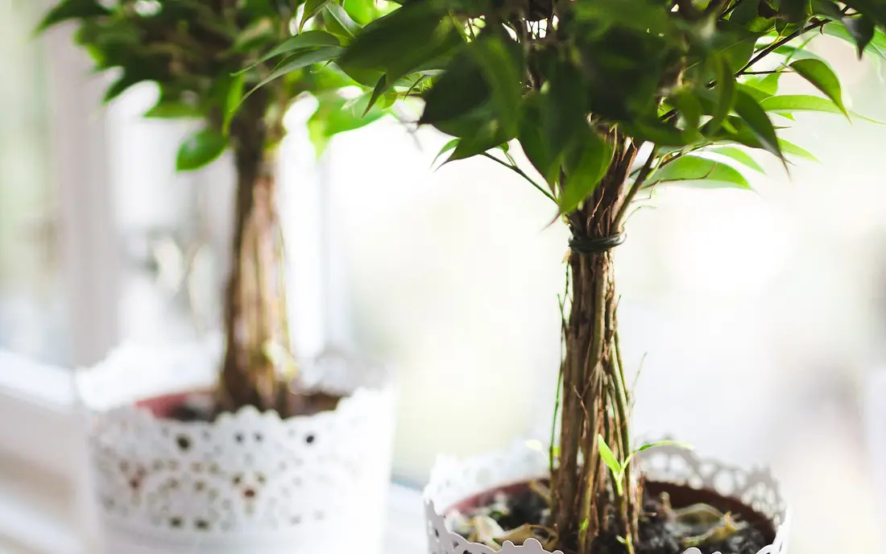

Care guide
Light, watering and what to do when it goes wrong
Short text, one rule at a time.
1. Find your light with your hand
At 11am, hold your hand 30 cm from the wall or floor where the plant would go. Look at the shadow and tap the closest option.

2. Watering without mistakes
- Push a finger into the soil to the second knuckle.
- Dry: water slowly until it drains out. Damp: wait.
- Empty the saucer after 15 minutes.
The days in the table are a summer starting point. In winter, wait about twice as long. The finger beats the calendar.
| Plant | Light | Watering | Care | Pet safe |
|---|---|---|---|---|
| ZZ plantZamioculcas zamiifolia | Shade, Part shade | every ~14 days | Easy | No |
| Snake plantDracaena trifasciata | Shade, Part shade, Sun | every ~14 days | Easy | No |
| PothosEpipremnum aureum | Shade, Part shade | every ~7 days | Easy | No |
| Spider plantChlorophytum comosum | Shade, Part shade | every ~6 days | Easy | Yes |
| PeperomiaPeperomia obtusifolia | Shade, Part shade | every ~10 days | Easy | Yes |
| Chinese money plantPilea peperomioides | Part shade | every ~7 days | Medium | Yes |
| Peace lilySpathiphyllum wallisii | Shade, Part shade | every ~5 days | Medium | No |
| MonsteraMonstera deliciosa | Part shade | every ~7 days | Medium | No |
| Braided ficusFicus microcarpa | Part shade, Sun | every ~7 days | Medium | No |
| Areca palmDypsis lutescens | Part shade, Sun | every ~5 days | Medium | Yes |
| Fiddle-leaf figFicus lyrata | Part shade, Sun | every ~7 days | Demanding | No |
| Boston fernNephrolepis exaltata | Part shade | every ~3 days | Demanding | Yes |
3. Pot and soil
- Pot 2 to 3 cm wider than the root ball, with a hole.
- Houseplant mix with perlite or pine bark for drainage.
- Snake plant and ZZ: add coarse sand.
- Fertilizer: once a month in spring and summer. Stop in winter.
4. When something goes wrong
Yellow, soft leaves
Likely cause: Too much water, in most cases.
What to do: Stop watering until the soil dries 3 cm down. Check that the pot hole is clear.
Brown, dry tips
Likely cause: Dry air or heavily chlorinated water.
What to do: Let water rest a day in the can. Move away from the AC.
Dark, soft stem at the base
Likely cause: Rotting roots.
What to do: Unpot, cut what is soft and replant in fresh, dry mix.
Drooping leaves, dry soil
Likely cause: Not enough water.
What to do: Water slowly until it runs out of the hole. It usually perks up in a day.
Thin plant stretching to the window
Likely cause: Not enough light.
What to do: Move closer to the window, little by little, and turn the pot weekly.